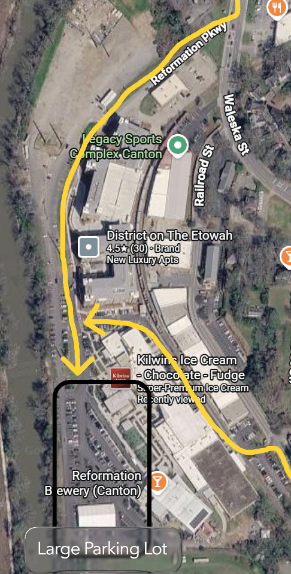
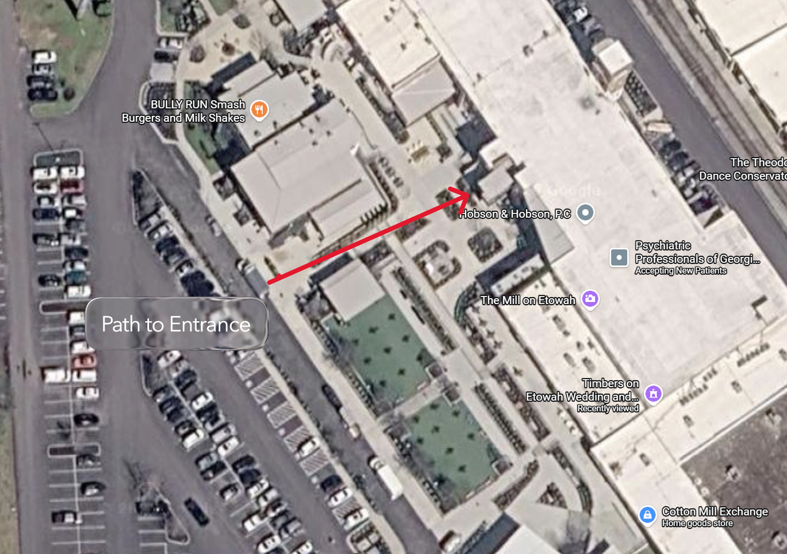
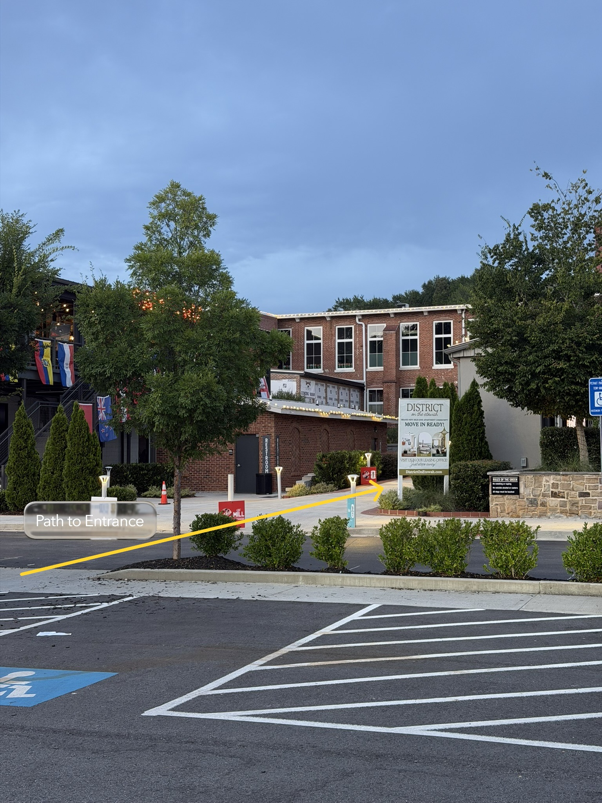
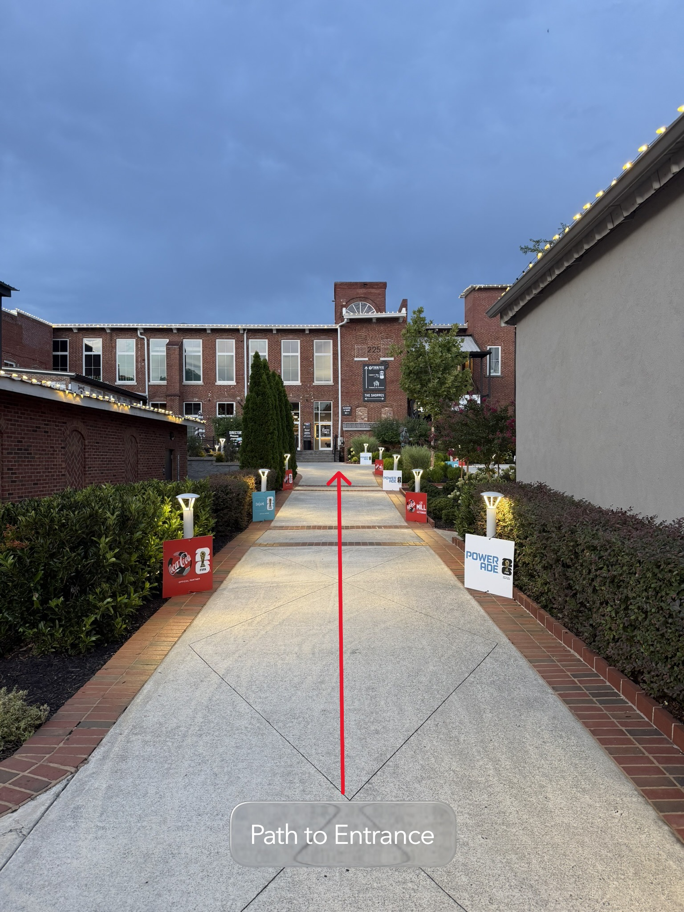
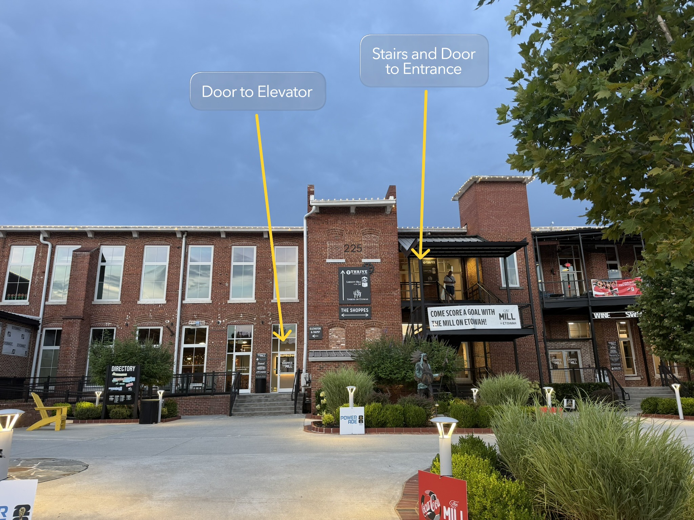
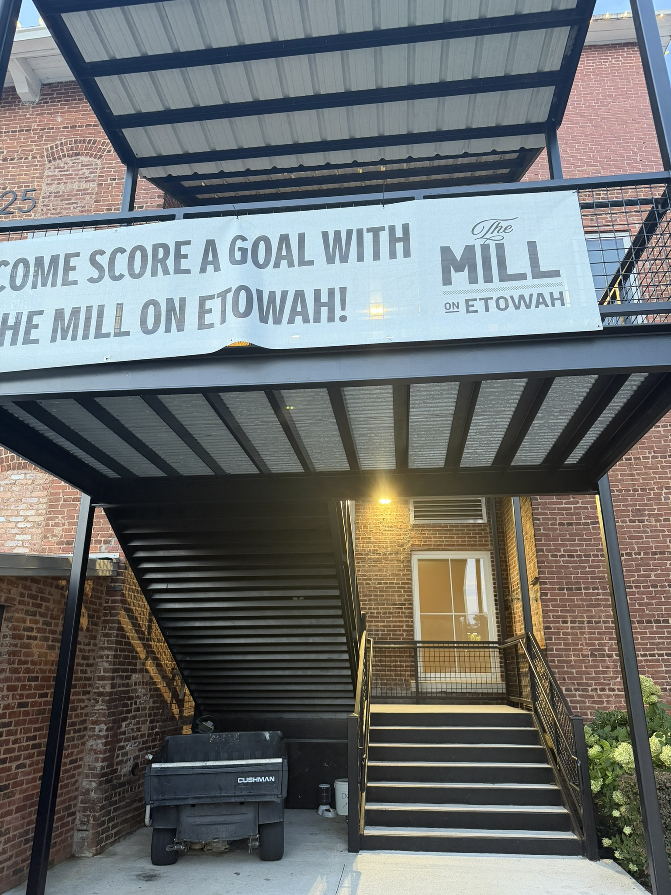
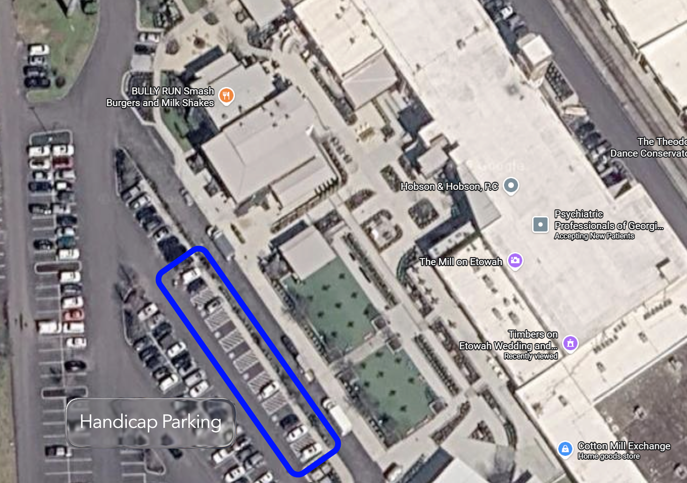
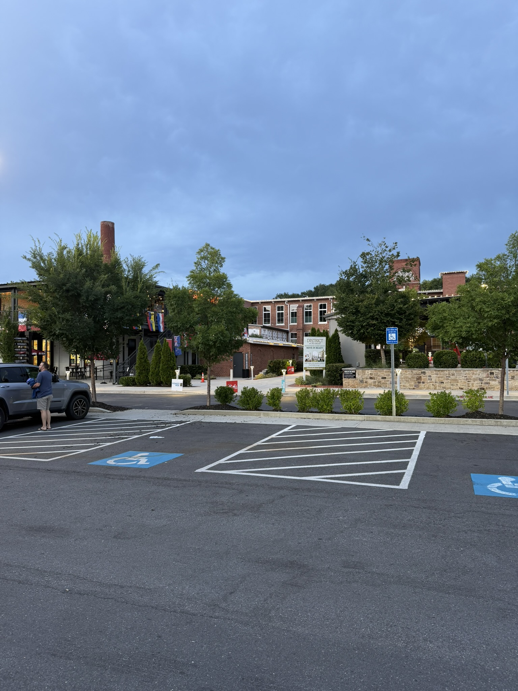
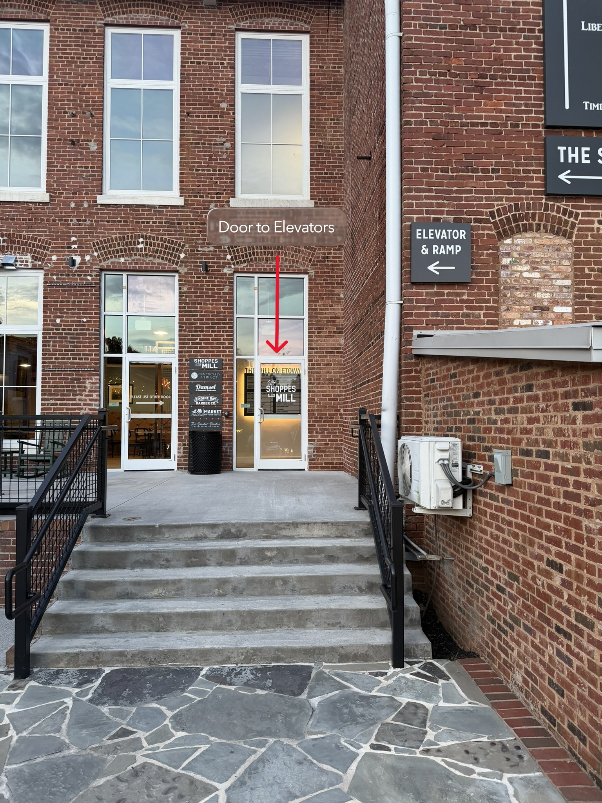
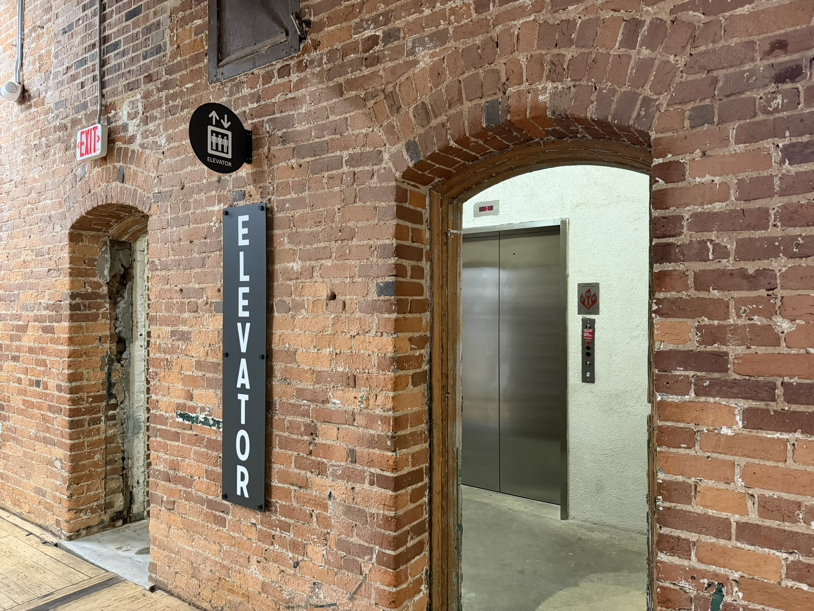

Nicholas & Sofia
We've put together these annotated maps and photos to help you easily find the Timbers on Etowah. Whether you're driving, walking from the parking lot, or using the elevator, the guide below will walk you through every step. Click on any image below to enlarge for easier viewing!

This overview map shows where to enter the property and directs guests to the main parking lot.

This walking diagram shows the route from the parking lot to the entrance of the venue.

From the parking lot, follow the annotated arrow toward the entrance walkway.

Continue along the walkway toward the venue entrance.

This view shows the front of the venue. The annotated arrows identify the entrance stairs and the door leading to the elevator.

These are the stairs leading directly to the entrance of the venue.

This annotated map shows the location of the designated handicap parking spaces within the parking lot.

Handicap parking is available adjacent to the building.

The door shown above leads directly to the elevator.

The elevator is located through the door to the right and provides access directly to the venue.